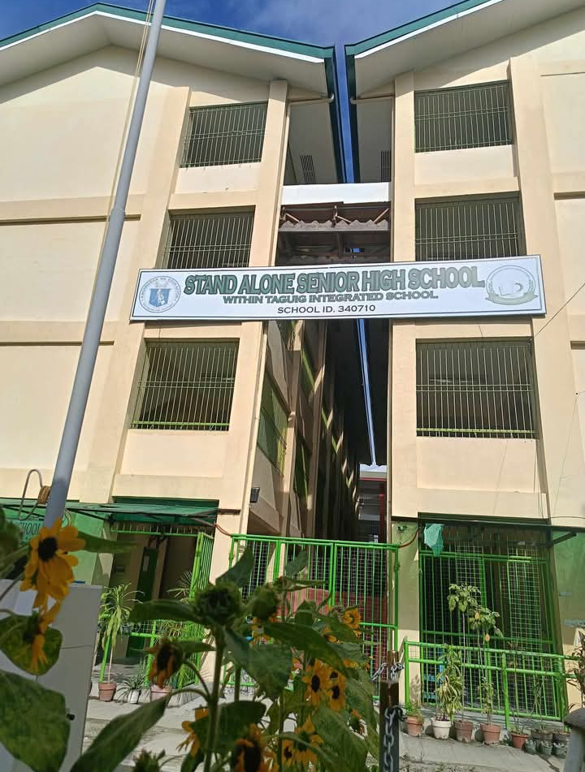
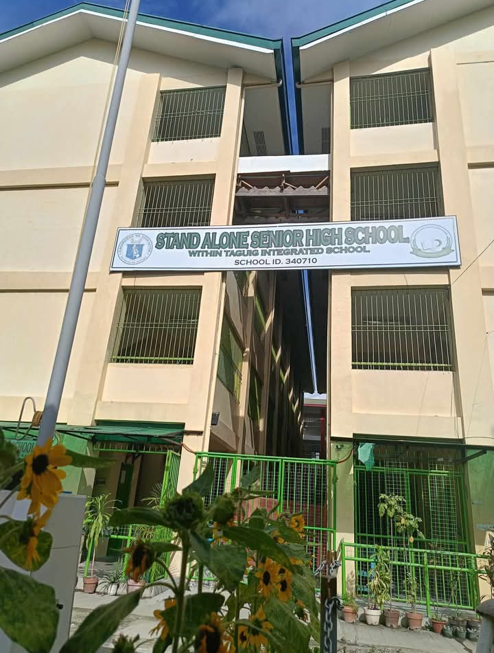
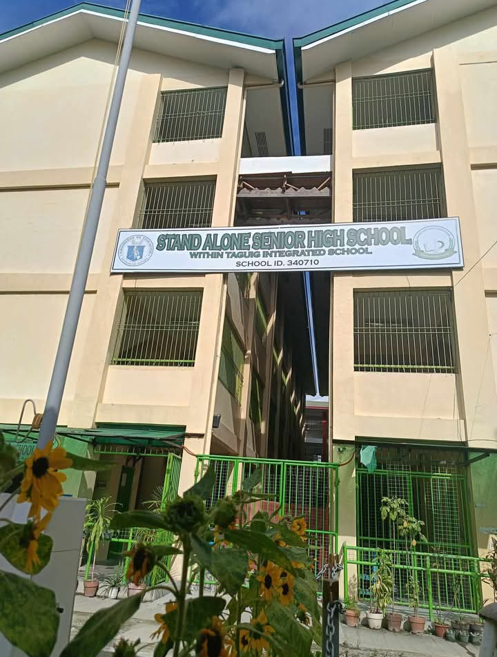
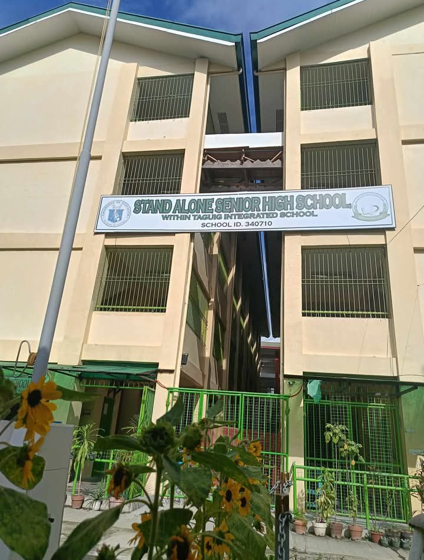

A stand-alone Senior High School (SHS) is a secondary school that operates independently from a Junior High School (JHS) or Integrated School (IS). It has its own distinct location and a separate school head (principal). This contrasts with Integrated SHS, which is located within an existing JHS or IS and shares the same school head.
Essentially, a stand-alone Senior High School is a separate institution specifically dedicated to Grades 11 and 12, the final two years of the K to 12 program in the Philippines. It offers specialized upper secondary education based on the chosen tracks and strands.
Here's a breakdown:
Stand-alone: A Senior High School with its own campus and principal, separate from any other school.
Integrated: A Senior High School within an existing Junior High School or Integrated School, sharing the same principal.